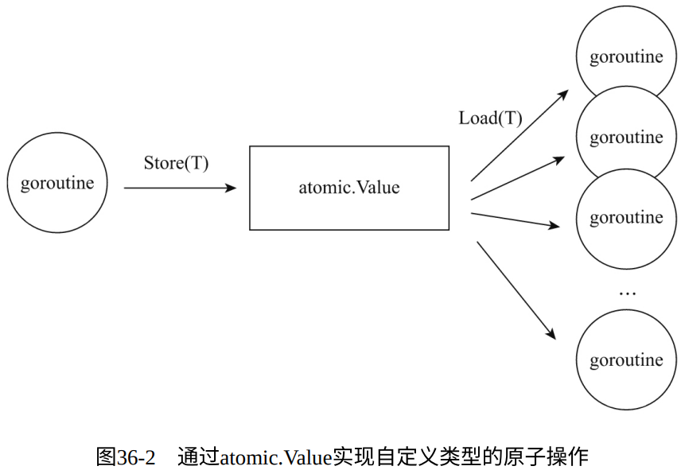

面向CSP并发模型的channel原语和面向传统共享内存并发模型的sync包提供的原语已经足以满足Go语⾔应用并发设计中99.9%的并发同步需求了，而剩余那0.1%的需求，可以使用Go标准库提供的atomic包来实现。
1. atomic包与原子操作
- atomic包是Go语言提供的原子操作原语的相关接口；
- 原子操作的指令是不可中断的，要么不执行，一旦执行就一次性全部执行完毕，不可分割；
- 原子操作由底层硬件直接提供支持，是一种硬件实现的指令级“事务”，相比于操作系统层面的sync包、Go运行时层面的channel，它更为原始；
- atomic包封装了CPU实现的部分原子操作指令，为用户层提供体验良好的原子操作函数
以atomic.SwapInt64函数在x86_64平台上的实现为例：
// $GOROOT/src/sync/atomic/doc.go
func SwapInt64(addr *int64, new int64) (old int64)
// $GOROOT/src/sync/atomic/asm.s
TEXT ·SwapInt64(SB),NOSPLIT,$0
JMP runtime∕internal∕atomic·Xchg64(SB)
// $GOROOT/src/runtime/internal/asm_amd64.s
TEXT runtime∕internal∕atomic·Xchg64(SB), NOSPLIT, $0-24
MOVQ ptr+0(FP), BX
MOVQ new+8(FP), AX
XCHGQ AX, 0(BX)
MOVQ AX, ret+16(FP)
RET
SwapInt64基本上就是对 x86_64 CPU实现的原子操作指令 XCHGQ 的直接封装
2. 对共享整型变量的无锁读写
atomic包提供了两大类原子操作接口：一类是针对整型变量的，包括有符号整型、无符号整型以及对应的指针类型；另一类是针对自定义类型的。
// chapter6/sources/go-atomic-package-1_test.go
var n1 int64
func addSyncByAtomic(delta int64) int64 {
return atomic.AddInt64(&n1, delta)
}
func readSyncByAtomic() int64 {
return atomic.LoadInt64(&n1)
}
var n2 int64
var rwmu sync.RWMutex
func addSyncByRWMutex(delta int64) {
rwmu.Lock()
n2 += delta
rwmu.Unlock()
}
func readSyncByRWMutex() int64 {
var n int64
rwmu.RLock()
n = n2
rwmu.RUnlock()
return n
}
func BenchmarkAddSyncByAtomic(b *testing.B) {
b.RunParallel(func(pb *testing.PB) {
for pb.Next() {
addSyncByAtomic(1)
}
})
}
func BenchmarkReadSyncByAtomic(b *testing.B) {
b.RunParallel(func(pb *testing.PB) {
for pb.Next() {
readSyncByAtomic()
}
})
}
func BenchmarkAddSyncByRWMutex(b *testing.B) {
b.RunParallel(func(pb *testing.PB) {
for pb.Next() {
addSyncByRWMutex(1)
}
})
}
func BenchmarkReadSyncByRWMutex(b *testing.B) {
b.RunParallel(func(pb *testing.PB) {
for pb.Next() {
readSyncByRWMutex()
}
})
}
$go test -bench . go-atomic-package-1_test.go -cpu 2
goos: darwin
goarch: amd64
BenchmarkAddSyncByAtomic-2 56360716 20.4
ns/op
BenchmarkReadSyncByAtomic-2 1000000000 0.729
ns/op
BenchmarkAddSyncByRWMutex-2 41799388 28.9
ns/op
BenchmarkReadSyncByRWMutex-2 35381282 32.6
ns/op
PASS
$go test -bench . go-atomic-package-1_test.go -cpu 8
goos: darwin
goarch: amd64
BenchmarkAddSyncByAtomic-8 58224580 20.5
ns/op
BenchmarkReadSyncByAtomic-8 1000000000 0.234
ns/op
BenchmarkAddSyncByRWMutex-8 18438339 64.2
ns/op
BenchmarkReadSyncByRWMutex-8 29445268 40.8
ns/op
PASS
$go test -bench . go-atomic-package-1_test.go -cpu 16
goos: darwin
goarch: amd64
BenchmarkAddSyncByAtomic-16 58500958 20.4
ns/op
BenchmarkReadSyncByAtomic-16 1000000000 0.238
ns/op
BenchmarkAddSyncByRWMutex-16 16669366 71.8
ns/op
BenchmarkReadSyncByRWMutex-16 29137915 41.2
ns/op
PASS
$go test -bench . go-atomic-package-1_test.go -cpu 32
goos: darwin
goarch: amd64
BenchmarkAddSyncByAtomic-32 58587633 20.4
ns/op
BenchmarkReadSyncByAtomic-32 1000000000 0.231
ns/op
BenchmarkAddSyncByRWMutex-32 14315090 81.8
ns/op
BenchmarkReadSyncByRWMutex-32 29164032 41.1
ns/op
PASS
- 读写锁的性能随着并发量增大的变化情况与前面讲解sync.RWMutex时的一致；
- 利用原子操作的无锁并发写的性能随着并发量增大几乎保持恒定；
- 利用原子操作的无锁并发读的性能随着并发量增大有持续提升的趋势，并且性能约为读锁的200倍；
3. 对共享自定义类型变量的无锁读写
atomic通过Value类型的装拆箱操作实现了对任意自定义类型的原子操作（Load 和Store），从而实现对共享自定义类型变量无锁读写的支持。

// chapter6/sources/go-atomic-package-2_test.go
type Config struct {
sync.RWMutex
data string
}
func BenchmarkRWMutexSet(b *testing.B) {
config := Config{}
b.ReportAllocs()
b.RunParallel(func(pb *testing.PB) {
for pb.Next() {
config.Lock()
config.data = "hello"
config.Unlock()
}
})
}
func BenchmarkRWMutexGet(b *testing.B) {
config := Config{data: "hello"}
b.ReportAllocs()
b.RunParallel(func(pb *testing.PB) {
for pb.Next() {
config.RLock()
_ = config.data
config.RUnlock()
}
})
}
func BenchmarkAtomicSet(b *testing.B) {
var config atomic.Value
c := Config{data: "hello"}
b.ReportAllocs()
b.RunParallel(func(pb *testing.PB) {
for pb.Next() {
config.Store(c)
}
})
}
func BenchmarkAtomicGet(b *testing.B) {
var config atomic.Value
config.Store(Config{data: "hello"})
b.ReportAllocs()
b.RunParallel(func(pb *testing.PB) {
for pb.Next() {
_ = config.Load().(Config)
}
})
}
$go test -bench . go-atomic-package-2_test.go -cpu=2
goos: darwin
goarch: amd64
BenchmarkRWMutexSet-2 40097684 29.3 ns/op 0 B/op
0 allocs/op
BenchmarkRWMutexGet-2 37523130 34.7 ns/op 0 B/op
0 allocs/op
BenchmarkAtomicSet-2 26030662 44.4 ns/op 48 B/op
1 allocs/op
BenchmarkAtomicGet-2 1000000000 0.677 ns/op 0 B/op
0 allocs/op
PASS
$go test -bench . go-atomic-package-2_test.go -cpu=8
goos: darwin
goarch: amd64
BenchmarkRWMutexSet-8 18696680 63.2 ns/op 0 B/op
0 allocs/op
BenchmarkRWMutexGet-8 29149304 41.0 ns/op 0 B/op
0 allocs/op
BenchmarkAtomicSet-8 42793735 29.1 ns/op 48 B/op
1 allocs/op
BenchmarkAtomicGet-8 1000000000 0.346 ns/op 0 B/op
0 allocs/op
PASS
$go test -bench . go-atomic-package-2_test.go -cpu=16
goos: darwin
goarch: amd64
BenchmarkRWMutexSet-16 17499681 68.9 ns/op 0 B/op
0 allocs/op
BenchmarkRWMutexGet-16 29048467 41.4 ns/op 0 B/op
0 allocs/op
BenchmarkAtomicSet-16 36774126 31.8 ns/op 48 B/op
1 allocs/op
BenchmarkAtomicGet-16 1000000000 0.356 ns/op 0 B/op
0 allocs/op
PASS
$go test -bench . go-atomic-package-2_test.go -cpu=32
goos: darwin
goarch: amd64
BenchmarkRWMutexSet-32 17546760 75.9 ns/op 0 B/op
0 allocs/op
BenchmarkRWMutexGet-32 34059410 35.3 ns/op 0 B/op
0 allocs/op
BenchmarkAtomicSet-32 36702122 33.3 ns/op 48 B/op
1 allocs/op
BenchmarkAtomicGet-32 1000000000 0.351 ns/op 0 B/op
0 allocs/op
PASS
- 利用原子操作的无锁并发写的性能随着并发量的增大而小幅下降；
- 利用原子操作的无锁并发读的性能随着并发量增大有持续提升的趋势，并且性能约为读锁的100倍；
4. 小结
- 随着并发量提升，使用atomic实现的共享变量的并发读写性能表现更为稳定，尤其是原子读操作，这让atomic与sync包中的原语比起来表现出更好的伸缩性和更高的性能。
- 由此可以看出atomic包更适合一些对性能十分敏感、并发量较大且读多写少的场合。
- 但atomic原子操作可用来同步的范围有较大限制，仅是一个整型变量或自定义类型变量。如果要对一个复杂的临界区数据进行同步， 那么首选依旧是sync包中的原语。